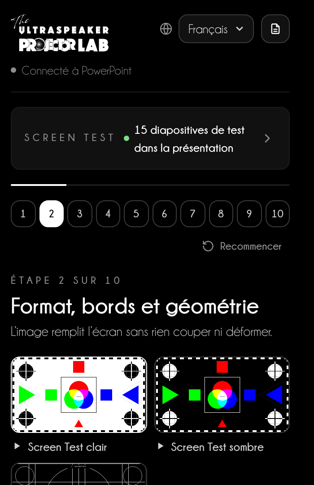
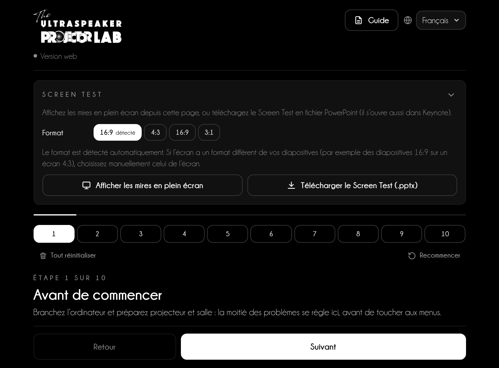
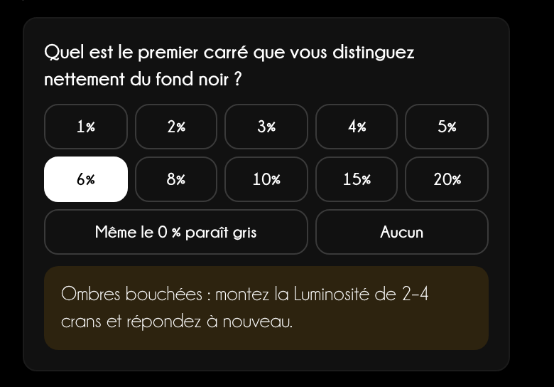
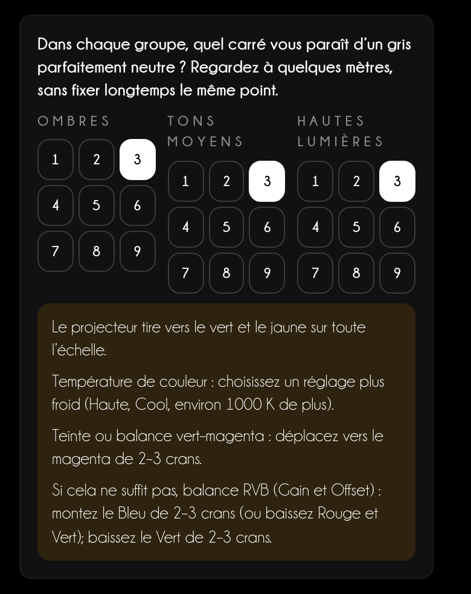
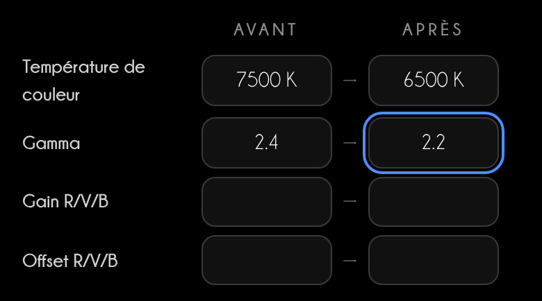
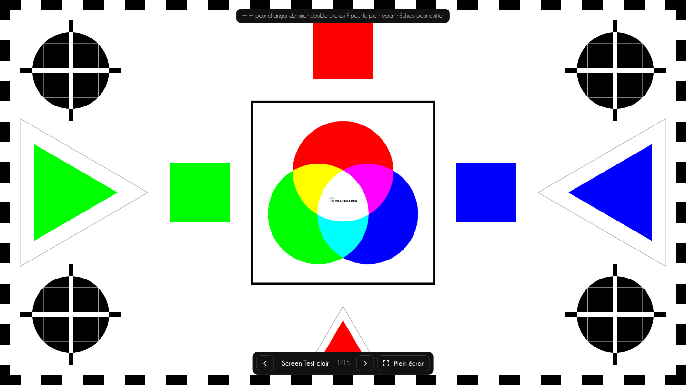
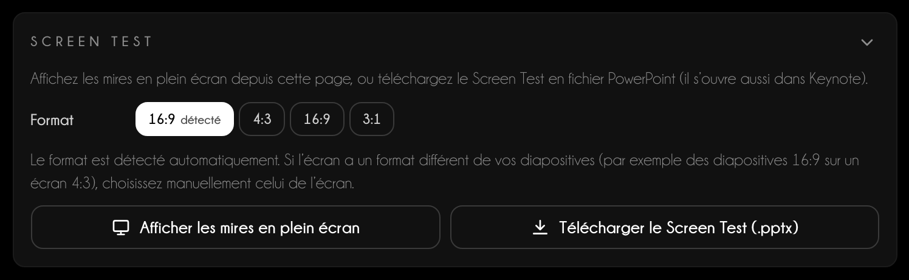
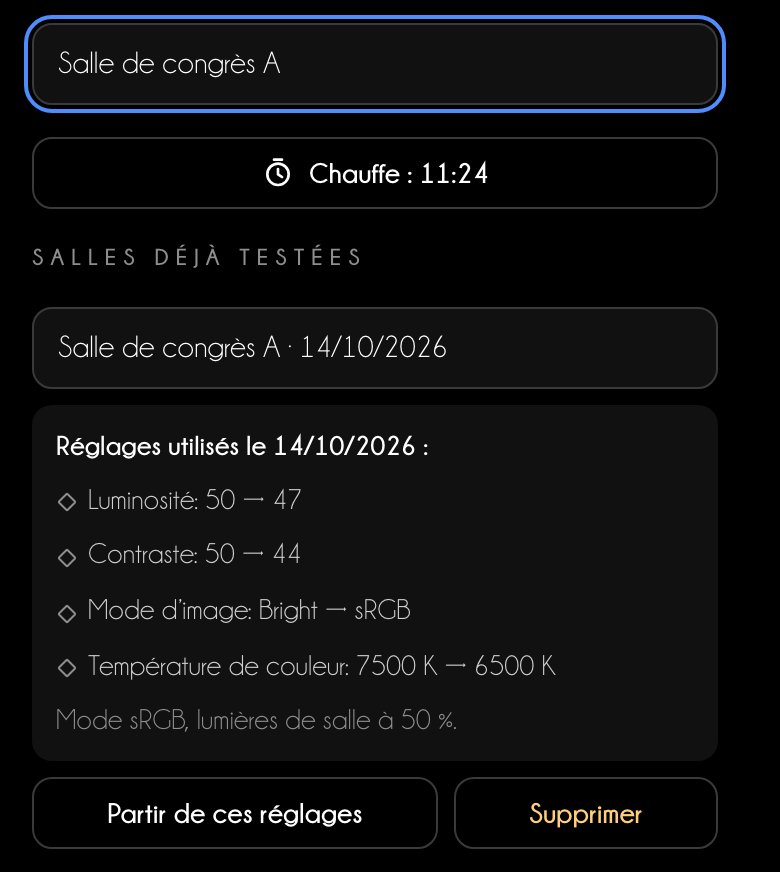
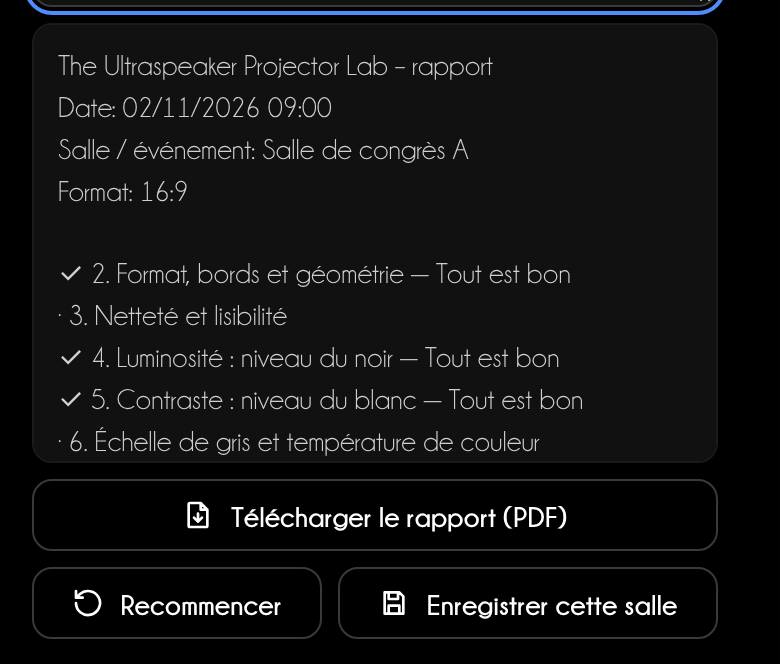

Guide d’utilisation
Le projecteur réglé
avant de parler
Projector Lab vous guide en 10 étapes pour régler le format, la netteté, le noir, le blanc et la couleur du projecteur, avec des mires faites pour votre présentation.
Guide d’utilisation
Projector Lab vous guide en 10 étapes pour régler le format, la netteté, le noir, le blanc et la couleur du projecteur, avec des mires faites pour votre présentation.
Sommaire
Chaque salle a un projecteur différent. Projector Lab vous fait projeter une mire, vous dit quoi regarder et quel menu du projecteur régler. En 10 à 15 minutes, vos diapositives et vos photos cliniques s’affichent comme sur votre moniteur.
Dans PowerPoint
Onglet Accueil → groupe The Ultraspeaker → Projector Lab. Le volet s’ouvre à droite. Insérer les diapositives de test ajoute à la présentation 15 diapositives de test dans son format, avec les instructions dans les notes de l’orateur.
Dans le navigateur
niki977.github.io/ultraspeaker-projector-lab, sans rien installer. Affichez les mires en plein écran sur le projecteur ou téléchargez le Screen Test en .pptx pour PowerPoint et Keynote. Sur le téléphone, la procédure reste sous la main.
Ce qui reste sur l’appareil
Langue, procédure en cours, minuteur et salles enregistrées restent dans le stockage du navigateur ou de PowerPoint. Aucune donnée n’est envoyée à un serveur.

| Fonction | PowerPoint | Version web |
|---|---|---|
| Diapositives de test dans la présentation | Oui | — |
| Mires en plein écran | Dans une fenêtre | Oui |
| Screen Test .pptx à télécharger | — | Oui |
| Photo clinique | Dans la diapositive de test | Dans la mire en plein écran |
| « Tout réinitialiser » | — | Oui |
La même page dans la version web et dans le volet : en haut le Screen Test, en dessous les 10 étapes.

1 2 3 4 5 6 7Chaque étape a la même structure. Projetez la mire, regardez depuis le fond de la salle, répondez à la question : le Lab vous dit quel menu régler, dans quel sens et de combien.
La question « Que voyez-vous ? »
Aux étapes 4 à 8, touchez ce que vous voyez : par exemple le premier carré qui se distingue du noir. La réponse donne la correction et le résultat de l’étape se met à jour tout seul.
Dominante de couleur
À l’étape 6, choisissez dans chaque groupe le gris qui vous semble le plus neutre. Si ce n’est pas le 5 au centre, le Lab reconnaît la dominante et indique la température de couleur, la teinte ou le gain RVB.


Réglages utilisés
Notez les réglages du projecteur avant et après : ils vont dans le rapport et dans les salles enregistrées.

Branchez l’ordinateur et préparez projecteur et salle : la moitié des problèmes se règle ici, avant de toucher aux menus.
L’image remplit l’écran sans rien couper ni déformer.
Étoiles nettes au centre et dans les coins, et la taille minimale de texte lisible depuis le fond de la salle.
Du détail dans les ombres sans noir grisâtre.
Des blancs pleins qui ne brûlent pas : les détails clairs restent visibles.
Des gris neutres et des paliers réguliers : la base pour que les couleurs soient justes.
Des couleurs pleines mais fidèles, sans teintes décalées ni zones empâtées.
Vos photos cliniques doivent montrer émail, limites et tissus comme vous les voyez sur votre écran.
Aucune tache, zone colorée ou point fixe dans l’image.
Vérifiez une vraie diapositive, notez les réglages et retirez les diapositives de test.
15 mires, dans le même ordre que les étapes. Elles s’adaptent au format réel de l’écran : les bords de la mire coïncident avec ceux du projecteur.

Dans la version web, choisissez le format de l’écran et appuyez sur Télécharger le Screen Test (.pptx). Le fichier contient les 15 diapositives avec les notes ; Keynote l’ouvre avec Fichier → Ouvrir.

1 2 3| Étape | Mires |
|---|---|
| 2 · Format, bords et géométrie | Screen Test clair, Screen Test sombre, Grille |
| 3 · Netteté et lisibilité | Netteté |
| 4 · Luminosité : niveau du noir | Noir |
| 5 · Contraste : niveau du blanc | Blanc |
| 6 · Échelle de gris et température de couleur | Gris, Gris comparés |
| 7 · Couleur et saturation | Barres SMPTE, Rampes de couleur |
| 8 · Références cliniques | Clinique, Votre photo |
| 9 · Uniformité et propreté | Blanc plein, Gris plein, Noir plein |
Trois outils pour ne pas repartir de zéro dans chaque salle.
À l’étape 1, appuyez sur Lancer la chauffe (15 min). Une lampe demande au moins 15 minutes, idéalement 30 ; laser et LED se stabilisent en 5 à 10.

À l’étape 10, le rapport résume date, format, résultats, réponses et réglages. Ajoutez une note et appuyez sur Télécharger le rapport (PDF) : vous obtenez un PDF pour la régie (dans le volet, il s’ouvre dans le navigateur).
Recommencer efface résultats, réponses et réglages mais garde les salles enregistrées. Dans la version web, Tout réinitialiser efface aussi les salles et le format.

Le meilleur réglage ne remplace pas la préparation.
Conseil d’orateur
Arrivez dans la salle 30 minutes avant. Allumez le projecteur tout de suite, faites la procédure pendant qu’il chauffe et terminez par votre diapositive la plus exigeante : une photo clinique, le plus petit texte, un graphique.
Si la régie ne vous laisse pas toucher au projecteur
Demandez trois choses précises : mode sRGB ou Présentation, overscan désactivé, trapèze au minimum. Le reste se fait depuis l’ordinateur : résolution native, format couleur RGB Full, Night Shift et Éclairage nocturne désactivés.
| Écran | Ce qui se passe | Que faire |
|---|---|---|
| 4:3 avec diapositives 16:9 | Bandes noires en haut et en bas | Acceptez les bandes ; choisissez 4:3 dans le Screen Test pour vérifier les bords de l’écran |
| 16:9 avec diapositives 4:3 | Bandes noires sur les côtés | N’étirez pas l’image : les cercles deviendraient ovales |
| 3:1 (écrans panoramiques) | Diapositives petites au centre ou coupées | Demandez le format à l’avance ; testez avec le Screen Test 3:1 et le plus grand texte |
Assistance
Écrivez à info@theultraspeaker.com en indiquant l’ordinateur et la version de PowerPoint.

Knowledge is not enough.
From expert to Ultraspeaker.
theultraspeaker.com · info@theultraspeaker.com